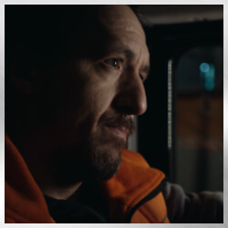
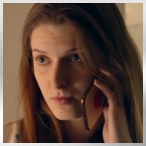
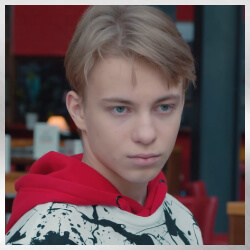
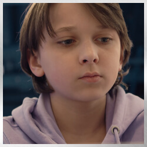
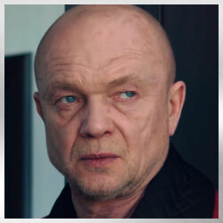
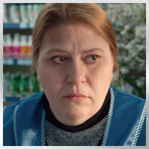

Экран слишком мал :(
Переверните устройство или используйте компьютер, инспектор.
Сохранение
Ваши данные переработаны в личный код.
Введите его, когда захотите продолжить с того же места на любом устройстве.
Введите его, когда захотите продолжить с того же места на любом устройстве.
Загрузка
Ваши данные переработаны в личный код.
Введите его, когда захотите продолжить с того же места на любом устройстве.
Введите его, когда захотите продолжить с того же места на любом устройстве.
Достижения ()
На этой странице отмечаются ваши успехи в прохождении сюжета.
Персонажи
Здесь вы можете увидеть информацию о персонажах
Полезные статьи
Полезные статьи о том как происходят поиски и чем ты можешь помочь
скопировать в буфер
Или вы можете схоранить себе qr-код и воспользоваться сканером на устройстве.
Сохранить файл с кодом
Продолжить →

Леший
Координатор поисков отряда волонтеров «ЛизаАлерт» Николай. Самоотверженный и принципиальный, решительный и очень рациональный. Готов на все ради спасения людей.

Сашка
Инфорг поисков и жена Лешего. Опытный поисковик, но в этот раз работает из дома по настоянию мужа. По-настоящему добрая и отзывчивая, с развитой интуицией. Часто бывает импульсивной и действует сердцем.
Боб
Пеший поисковик отряда «ЛизаАлерт», волонтер-весельчак. Умеет находить общий язык с людьми. Добродушный, всегда готов прийти на помощь.

Картошкин
Картограф и опытный поисковик Маша. Скромная, красивая и умная девушка. Rак хороший психолог, умеет найти подход к людям.

Лиса
Главная героиня, девочка-подросток Алиса. Она яркая, умная, целеустремленная, свободолюбивая. У Лисы на все есть свое мнение, поэтому ее не воспринимают сверстники и даже буллят. Единственный друг – Макс, именно с ним девочка решает бежать из города, чтобы почувствовать вкус свободы.

Макс
Лучший друг Лисы и начинающий художник. Живет вдвоем с матерью, которая его не понимает и вечно ругает. Побег – его идея, он мечтает попасть на арт-фестиваль в Москве.

Артём
Брат Лисы с расстройством аутистического спектра. В силу диагноза немного болезненный, при этом очень умный и начитанный. Кажется, знает все обо всем. Асоциален (в основном из-за того, что говорит людям только правду, а это им не всегда нравится).

Андрей
Отчим Лисы и Артёма. Местный авторитет и бизнесмен. Бывает резок, импульсивен. Требует к себе уважения и особого отношения в силу статуса. Считает, что деньги могут решить все проблемы. Что бы кто ни говорил, любит своих приемных детей и готов ради них на все.

Ирина
Мама Лисы и Артёма. Мягкая и ранимая женщина, часто оказывается между двух огней – Лисой и Андреем, которые в последнее время часто конфликтуют. Ее призвание – быть мамой, заботиться о детях и Андрее, а главное желание – это любовь, мир и взаимопонимание в семье.

Валя
Мама Макса. Работает кассиром в магазине, трудится за копейки. Воспитывает сына одна, из-за чего порой ей приходится быть жесткой. Может и накричать, и ударить, так как хочет, чтобы сын ей помогал и ценил все, что она делает для него, а не витал в облаках и мечтал об искусстве.
Ты собираешься в лес
Поход в лес может закончиться печально, если не быть готовым к неожиданностям.
Ты заблудился в лесу
Вместо того чтобы паниковать есть порядок действий, который может помочь тебе справиться с этой ситуацией.
Ты отдыхаешь у водоёма
Водоемы опасней, чем кажутся. Будь готов, предупреждай беду. Помогай другим.
Ты один в городе
Город не просто так называют бетонными джунглями. Готовность действовать важна.
Ты потерялся во время поездки
Полезная информация, которую стоит знать детям во время поездок.
Потерялся близкий
Что делать, если ваш близкий человек потерялся. Порядок действий, номер телефонов, алгоритм действий.
Миф про 3 дня
Помните, в детективных фильмах и сериалах, если пропал человек, то лишь спустя три дня нужно было обращаться в полицию, не раньше?
У вас есть пожилые родственники или вы встретили дезориентированного человека
У многих из нас есть бабушки и дедушки, которых мы любим и ценим. К сожалению, с возрастом у них ухудшается память.
У вас есть дети
Мы часто слышим о случаях пропажи детей. К сожалению, исчезновение ребёнка не всегда является несчастным случаем, а может быть хладнокровным преступлением.